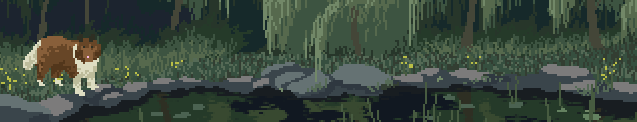

Marjhel M. GargantosComic Artist • Student • Freelancer Home | Family | Hobbies | Likes and Dislikes |
|  |
About MeMy name is Marjhel M. Gargantos, pen name is Mazu. I'm 20 years old and lived in Caloocan City. I am an animation student from Manila Central University and before that I studied architecture at the University of the East. Shifting from architecture to animation has been a big change in my journey, but it reflects how much I truly value creativity, storytelling, and art. My background in architecture gave me a foundation in design and structure, while animation allows me to breathe life into stories and characters that people can connect with. |
FatherName: Paul Jepsen M. Gargantos Age: 45 Occupation: OFW |
MotherName: Marilou M. Gargantos Age: 43 Occupation: Housewife |
Older SiblingName: Jelou M. Gargantos Age: 22 Occupation: Optometry Student Studies in Manila Central University |
|
Youngest SiblingName: Paulyn M. Gargantos Age: 16 Occupation: Student Studies in Manila Central University |
| Likes | Dislikes | Fandoms |
|---|---|---|
|
|
|
Go to Homepage
|
|